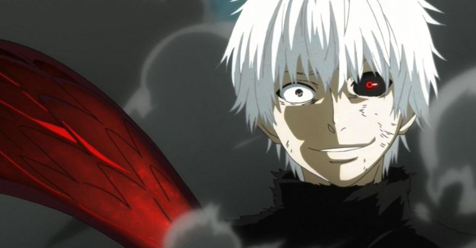
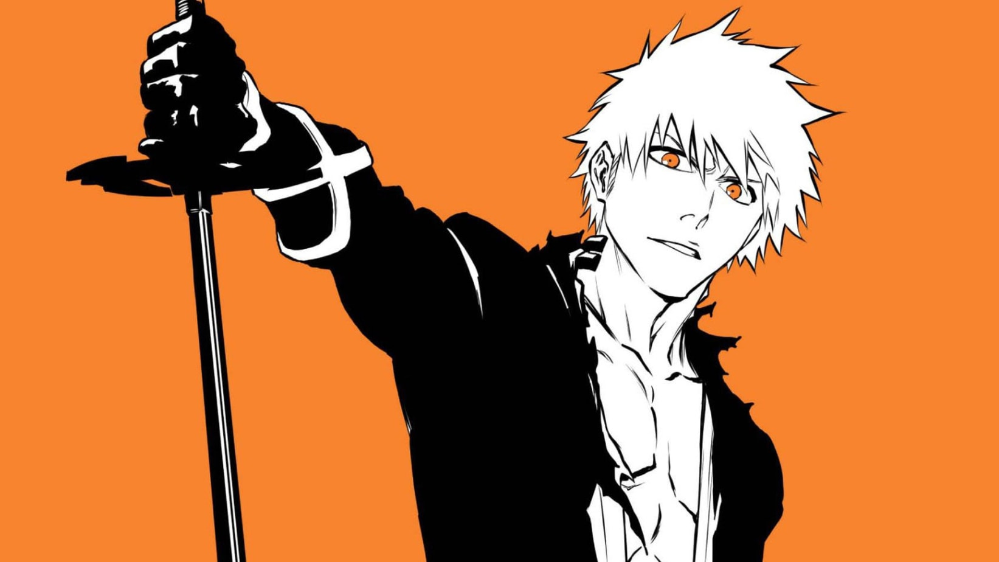
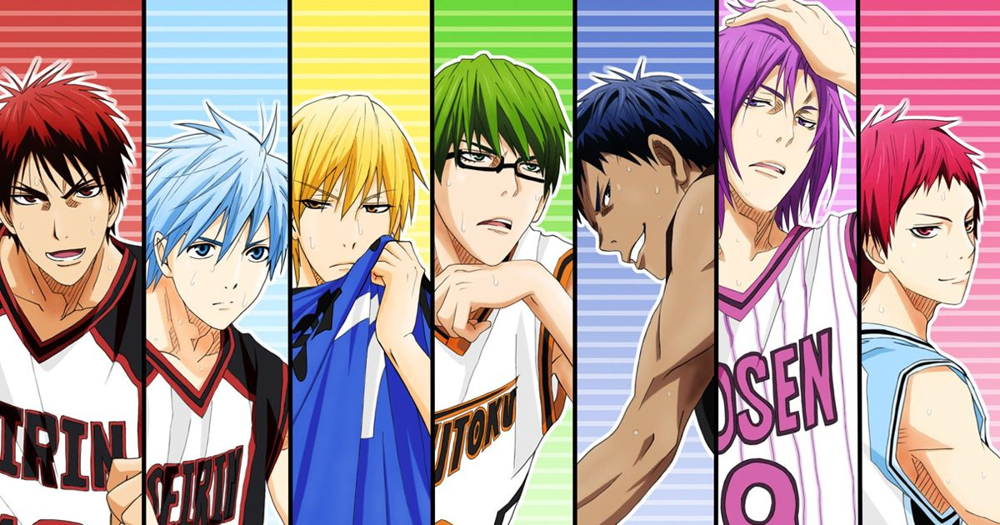
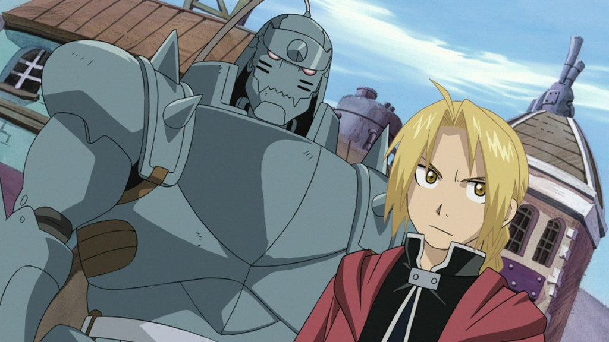
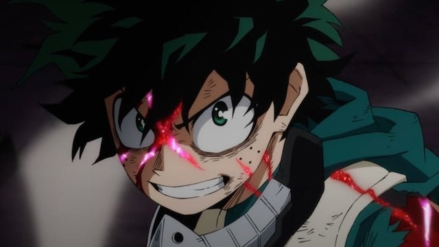
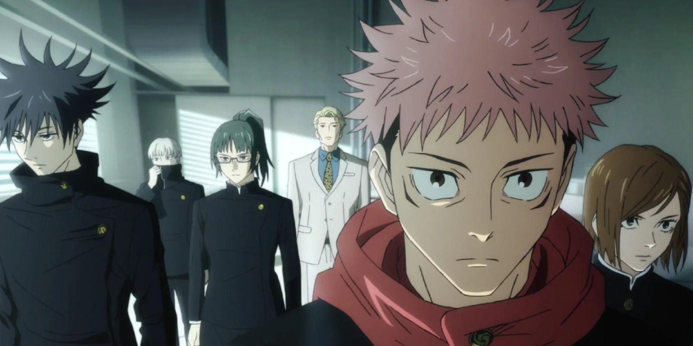
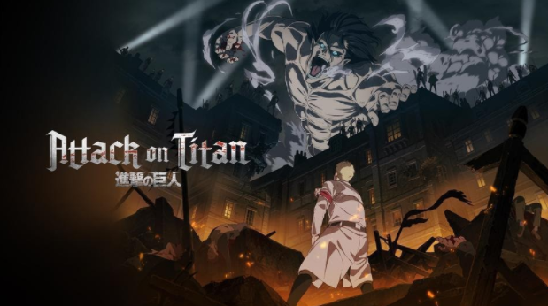
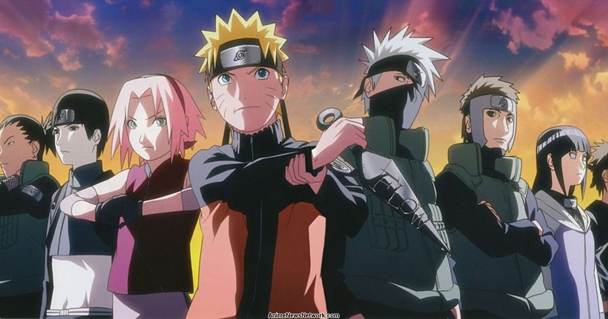

Top Ten Anime
Lots of my friends know I'm a huge anime fan. I haven't seen a lot of anime shows personally and I'll try my best to see more. Here I'll be ranking the ones I've been fortunate enough to see. Also if you don't watch anime for whatever reason, I'm sorry for you.
10
The anime started out like a house of fire, and just basically faded. Currently, I don't even know what's going. I'll try and get back into it.
9
I think I would rank bleach better, if I could finish it all, but its soo long and I can't find anyone that has all the episodes. But I've enjoyed it so far, it's really good. There is also a new arc, so lots to watch.
8
Who knew basketball could be so exciting!!. My interest for basketball has really grown after seeing this anime. Good watch.
7
Personally, I don't still get all the hype about this anime. It's really good, the story progresses really well as the episodes go on , it not only focuses on the protagonists Ed and Al but also a lot of other characters, don't get me wrong but it just lacks something, I can't really explain.
6
I know an anime is good, once it messes up my sleeping schedule. Really good plot, characters and fight scenes.
5
Jujutsu Kaisen is only ranked here because there's only been a season of it. I know season 2 is gonna bang so hard. If you haven't seen it, you just have to before the second season is released.
4

Yes, recommendation time. Death note should be an entry level anime for all beginners. This anime will mess with your head so much. The end is just perfect.
3

Yes another anime recommendation if you want to get into anime then Demon slayer is for you. One of the best shonen anime, really good plot, lovable characters with intense battle scenes. Just perfect and yes I enjoy my fight scenes.
2
Chee!!! My only regret is reading the manga of this anime before the final season, I couldn't wait because its just that good!. Attack on titan will definitely go on to be one of, not only the greatest anime but also one of the greatest shows to exist. I was so close to giving it the number 1 spot.
1
What you grew up with will always stick with you no matter what, from my primary school days up until I watched the last episode in Uni. I remember crying. I can't really recommend it to anyone cause of the many filler episodes. But it's just so good, plot twist, backstories, fight scenes that live rent free in my head. Yeah Naruto will forever remain in my heart.